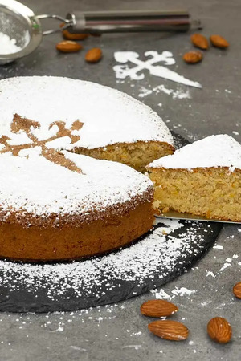

Kettle Corn Recipe

Delicious Spanish almond cake or famously known as tarta de Santiago. This is a cake from Galicia and it is super easy to make, with only 3 main ingredients. I always feel this type of cake is just perfect for the holiday season.
Ingredients
- 3 eggs
- ¾ cup sugar (150 gr)
- 1 ½ cup almond meal (150 gr)
- ½ teaspoon cinnamon powder
- ¼ teaspoon salt
- Zest of 1 lemon
- Zest of 1 clementine
- Icing sugar, for dusting on top
Directions
- Add eggs and sugar into a bowl and whisk until the mixture turns pale.
- Add the rest of the ingredients, except for icing sugar and using a spatula, gently fold everything until well combine.
- Pour batter into a 7 inch (18 cm) springform pan that has been buttered and floured. Bake in a preheated oven at 360ºF (180ºC) for 40 minutes or until golden brown and fully cooked.
- Cool completely. Place the Santiago cross cut out on top and dust generous amount of icing sugar all over the cake. Carefully remove the cut out. Slice and serve, enjoy!
Back to Home